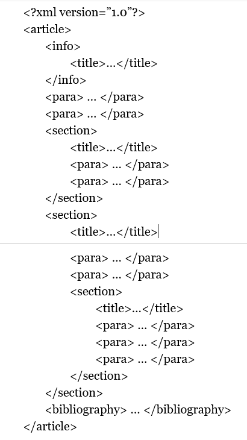
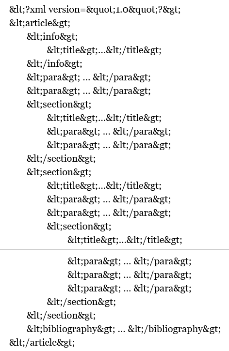

clinicalprocess: healthcond: description 2.1
2.1.19 - release
clinicalprocess: healthcond: description 2.1 - Local Development build (v2.1.19) built by the FHIR (HL7® FHIR® Standard) Build Tools. See the Directory of published versions
GetCareDocumentation returnerar hälso- och sjukvårdsdokument för en patient. Sådana dokument omfattar anteckningar av typerna utredning, åtgärd/behandling, sammanfattning, samordning, inskrivning, slutanteckning som även inkluderar epikris, anteckning utan fysiskt möte, slutenvårdsanteckning samt besöksanteckning.
Meddelandeformatet baseras på NPÖ RIV 2.2.0 och är kompatibelt med HL7 v. 3 CDA v. 2. Mappning mot dessa hittas i bilaga [R3].
2.1
De gemensamma informationskomponenter som används i detta kontrakt beskrivs i bilagan ”Bilaga Gemensamma_typer_7.pdf”. Restriktioner av kardinaliteten av enskilda element i dessa gemensamma informationskomponenter markeras i kardinalitetskolumnen med röd text.
Fältet ”clinicalDocumentNoteText” innehåller dokumentets textuella innehåll. Producenten har möjlighet att formatera denna text i sina system i det standardiserade layout-formatet DocBook version 5.0, som är en Oasis standard som finns beskrivit på DocBooks hemsida [R11]. Användningen av DocBook för “clinicalDocumentNoteText” är dock begränsad till de följande elementen:
En text som är formaterat med ovanstående DocBook element ska vara s.k. ”entity encoded” för att kunna skickas via fältet “clinicalDocumentNoteText”. Detta behövs för att XML-taggarna, som är en del av DocBook-formatet som används för att formatera texten som utgör fältets innehåll, inte ska uppfattas som en del av svarsmeddelandets XML-struktur. Vid den s.k. entity encoding översätts exempelvis de nedanstående symbolerna på angivit sätt:
> översätts till >< översätts till <“ översätts till "Kolumnen “DocBook-element” i tabellen nedan visar en exempelstruktur med de DocBook-element som kan användas. Kolumnen “DocBook-element med entity encoding” visar samma DocBook-element med entity encoding, och därmed det formatet som kan skickas via fältet “clinicalDocumentNoteText”.
Konsumenten behöver sedan återskapa den ursprungliga DocBook XML-syntaxen från innehållet i fältet, dvs översätta t.ex. > till >. Det finns många exempel på open-source-bibliotek som kan användas av producenten för att göra ”entity encoding” och av konsumenten för att återställa till XML-syntaxen. Ett exempel är Apache Commons Text StringEscapeUtils (se metoderna escapeXml respektive unescapeXml) [R12].
Efter att konsumenten har återställt texten till den ursprungliga XML-syntaxen, behöver konsumenten även transformera texten till ett presentationsformat såsom XHTML eller PDF. Det kan t.ex. ske med hjälp av de XSLT-baserade transformeringsskript som tillhandahålls på DocBooks hemsida [R11].
| DocBook-element | DocBook-element med entity encoding |
|---|---|
 |
 |
Nedanstående tabell beskriver varje element i begäran och svar. Finns ytterligare regler för ett element är det noterat med referens till regeln i beskrivningen och beskrivs mer i detalj i stycket Övriga regler.
| Namn | Typ | Beskrivning | Kardinalitet |
|---|---|---|---|
| Begäran | |||
| careUnitHSAId | HSAIdType | Filtrering på vårdenhet vilket motsvarar careUnitHSAId i HealthcareProfessionalType. | 0..* |
| patientId | PersonIdType | Id för patienten där fältet id sätts till patientens identifierare. Anges med 12 tecken utan avskiljare. / Fältet type sätts till OID för typ av identifierare. / 1) För personnummer ska Skatteverkets OID för personnummer (1.2.752.129.2.1.3.1) användas, [R14]. / 2) För samordningsnummer ska Skatteverkets OID för samordningsnummer (1.2.752.129.2.1.3.3) användas, [R14] / 3) Tjänsteproducenter ska även stödja sökning på reservnummer med hjälp av att ange lokalt definierade OID’ar för reservnummer, exempelvis SLL reservnummer (1.2.752.97.3.1.3), [R14]. / OBS reservnummer kan ej användas tillsammans med EI och aggregerande tjänster då dessa komponenter idag inte är anpassade för att stödja typ av id, inga uppdateringar till EI ska göras av en tjänsteproducent för reservnummer. / En tjänstekonsument som vill begära mha reservnummer måste därmed använda sig av systemadressering och ha vetskap om vilken reservnummer-OID som gäller vid anrop mot en specifik tjänsteproducent. | 1..1 |
| timePeriod | DatePeriodType | Begränsar sökningen till det angivna intervallet. Begränsningen innebär att endast poster returneras där någon av tidpunkterna documentTime, authorTime, signatureTime eller dissentingOpinion.authorTime i svaret ligger inom sökintervallets start- och slutdatum. / Notera att sökintervallet beskrivs som ett datumintervall. Vid jämförelse konverteras datapostens tidpunkter till datum. | 0..1 |
| ../start | string | Startdatum. Format ÅÅÅÅMMDD. | 1..1 |
| ../end | string | Slutdatum. Format ÅÅÅÅMMDD. | 1..1 |
| sourceSystemHSAId | HSAIdType | Begränsar sökningen till aktivitet som är skapad i det angivna källsystemet. Tjänsteproducenten förväntas enbart returnera poster som tillhör efterfrågat källsystem. / Värdet på detta fält måste överensstämma med värdet på logicalAddress i anropets tekniska kuvertering (ex. SOAP-header). / Det innebär i praktiken att aggregerande tjänster inte används när detta fält anges. / Ska anges om careContactId angivits. / Ska anges vid begäran på reservnummer. / Om sourceSystemHSAId och logicalAddress är olika ska ett svar endast innehålla en resultType med result.resultCode satt till ERROR samt result.errorCode satt till INVALID_REQUEST / Om careContactId är satt och sourceSystemHSAId är tomt ska ett svar endast innehålla en resultType med result.resultCode satt till ERROR samt result.errorCode satt till INVALID_REQUEST. | 0..1 |
| careContactId | string | Begränsar sökningen till den hälso- och sjukvårdskontakt som föranlett den information som omfattas av dokumentet. Identiteten är unik inom källsystemet. sourceSystemHSAId måste anges om denna parameter anges. | 0..* |
| Svar | |||
| careDocumentation | CareDocumentationType | De hälso- och sjukvårdsdokument som matchar begäran. | 0..* |
| ../careDocumentationHeader | PatientSummaryHeaderType | Innehåller basinformation om dokumentet | 1..1 |
| ../../documentId | string | Dokumentets identitet som är unik inom källsystemet. / Identifieraren ska vara konsistent och beständigt mellan olika majorversioner av ett kontrakt. Ett exempel på detta är att en vårdkontakt ska ha samma identifierare i majorversion 3 och 4 av ett tjänstekontrakt för att läsa vårdkontakter. / Identifieraren ska vara konsistent och beständigt mellan olika kontrakt. Ett exempel på detta är att samma remiss-identitet ska användas i ett tjänstekontrakt för att läsa remisser, samt tjänstekontraktet som läser remissvar som refererar till den ursprungliga remissen. | 1..1 |
| ../../sourceSystemHSAid | HSAIdType | HSA-id för det system som dokumentet är skapat i. / Notera att elementnamnet i de andra kontrakten är sourceSystemHSAId (med ett versalt I). Skälet till avvikelsen här är p.g.a. behovet av detta kontrakts bakåtkompatibilitet med kontraktet i version 2.0. | 1..1 |
| ../../documentTitle | string | Titel som beskriver den information som sänds i dokumentet. | 0..1 |
| ../../documentTime | TimeStampType | Händelsetidpunkt. Tidsangivelse för den händelse dokumentet gäller. | 0..1 |
| ../../patientId | PersonIdType | Identifierare för patient. | 1..1 |
| ../../../id | string | Sätts till patientens identifierare. Anges med 12 tecken utan avskiljare. | 1..1 |
| ../../../type | string | Sätts till OID för typ av identifierare. / För personnummer ska Skatteverkets personnummer (1.2.752.129.2.1.3.1), [R14]. / För samordningsnummer ska Skatteverkets samordningsnummer (1.2.752.129.2.1.3.3) ), [R14]. / För reservnummer används lokalt definierade reservnummet, exempelvis SLL reservnummer (1.2.752.97.3.1.3) ), [R14]. | 1..1 |
| ../../accountableHealthcareProfessional | HealthcareProfessionalType | Information om den hälso- och sjukvårdsperson som ansvarar för informationen i dokumentet, nedan kallas författare. | 1..1 |
| ../../../authorTime | TimeStampType | Tidpunkt då informationen registrerades. | 1..1 |
| ../../../healthcareProfessionalHSAId | HSAIdType | Författarens HSA-id | 0..1 |
| ../../../healthcareProfessionalName | string | Namn på författaren. Om tillgängligt ska detta anges. | 0..1 |
| ../../../healthcareProfessionalRoleCode | CVType | Information om personens befattning. Om möjligt ska kodverket Befattning (OID 1.2.752.129.2.2.1.4), [R13]. | 0..1 |
| ../../../../code | string | Befattningskod. Om code anges ska också codeSystem samt displayName anges. | 0..1 |
| ../../../../codeSystem | string | Kodsystem för befattningskod. Om codeSystem anges ska också code samt displayName anges. | 0..1 |
| ../../../../codeSystemName | string | Namn på kodsystem för befattningskod. | 0..1 |
| ../../../../codeSystemVersion | string | Version på kodsystem för befattningskod. | 0..1 |
| ../../../../displayName | string | Befattningskoden i klartext. Om separat displayName inte finns i producerande system ska samma värde som i code anges. | 0..1 |
| ../../../../originalText | string | Om befattning är beskriven i ett lokalt kodverk utan OID, eller när kod helt saknas, kan en beskrivande text anges i originalText. / Om originalText anges ska inget annat värde i healthcareProfessionalRoleCode anges. | 0..1 |
| ../../../healthcareProfessionalOrgUnit | OrgUnitType | Den organisation som författaren är uppdragstagare på. I de fall då HSA-id inte finns tillgängligt i systemet ska lokalt id anges (unikt inom källsystemet). | 1..1 |
| ../../../../orgUnitHSAId | HSAIdType | HSA-id för organisationsenhet. I de fall då HSA-id inte finns tillgängligt i systemet ska lokalt id anges (unikt inom källsystemet). | 1..1 |
| ../../../../orgUnitName | string | Namnet på den organisation som författaren är uppdragstagare på | 1..1 |
| ../../../../orgUnitTelecom | string | Telefon till organisationsenhet | 0..1 |
| ../../../../orgUnitEmail | string | Epost till enhet | 0..1 |
| ../../../../orgUnitAddress | string | Postadress för den organisation som författaren är uppdragstagare på. Skrivs på ett så naturligt sätt som möjligt, exempelvis: / ”Storgatan 12 / 468 91 Lilleby” | 0..1 |
| ../../../../orgUnitLocation | string | Text som anger namnet på plats eller ort för organisationens fysiska placering | 0..1 |
| ../../../healthcareProfessionalCareUnitHSAId | HSAIdType | HSA-id för Vårdenhet / (Regel: 1) | 0..1 |
| ../../../healthcareProfessionalCareGiverHSAId | HSAIdType | HSA-id för vårdgivaren, som är vårdgivare för den enhet som författaren är uppdragstagare för. / (Regel: 1) | 0..1 |
| ../../legalAuthenticator | LegalAuthenticatorType | Information om vem som signerat informationen i dokumentet. | 0..1 |
| ../../../signatureTime | TimeStampType | Tidpunkt för signering | 1..1 |
| ../../../legalAuthenticatorHSAId | HSAIdType | HSA-id för person som signerat dokumentet | 0..1 |
| ../../../legalAuthenticatorName | string | Namnen i klartext för signerande person. | 0..1 |
| ../../approvedForPatient | boolean | Anger om information får delas till patient. Värdet sätts i sådant fall till true, i annat fall till false. | 1..1 |
| ../../careContactId | string | Identitetet för den hälso- och sjukvårdskontakt som föranlett den information som omfattas av dokumentet. Identiteten är unik inom källsystemet | 0..1 |
| ../../nullified | N/A | 0..0 | |
| ../../nullifiedReason | N/A | 0..0 | |
| ../careDocumentationBody | CareDocumentationBodyType | 1..1 | |
| ../../clinicalDocumentNote | ClinicalDocumentNoteType | Dokument/anteckning. | 1..1 |
| ../../../clinicalDocumentNoteCode | ClinicalDocumentNoteCodeEnum | Obligatoriskt om clinicalDocumentTypeCode saknas. Får annars inte anges samtidigt med clinicalDocumentTypeCode. / Typ av hälso- och sjukvårdsdokument. Kod tas från KV Anteckningstyp (1.2.752.129.2.2.2.11). / Tillåtna värden är: / utr = Utredning, / atb = åtgärd/Behandling, / sam = Sammanfattning, / sao = Samordning, / ins = Inskrivning, / slu = Slutanteckning, / auf = Anteckning utan fysiskt möte, / sva = Slutenvårdsanteckning, / bes = Besöksanteckning. | 0..1 |
| ../../../clinicalDocumentTypeCode | ClinicalDocumentTypeCodeEnum | Obligatoriskt om clinicalDocumentNoteCode saknas. Får annars inte anges samtidigt med clinicalDocumentNoteCode. / Epikris = epi / Intagninganteckning = int / Daganteckning = dag / Öppenvårdsanteckning = ova Öppenvårdssammanfattning = ovs / Övrigt document = ovr | 0..0 |
| ../../../clinicalDocumentNoteTitle | string | Titel på dokument | 0..1 |
| ../../../clinicalDocumentNoteText | string | Dokumentets innehåll i text. / Texten kan antingen skickas som vanlig text eller formaterat enligt DocBook-standarden, se 7.1.3. / Obs Man kan välja att skicka dokumentets innehåll i elementet clinicalDocumentNoteText eller i multimediaEntry enligt respektive elements regler, man får inte skicka med båda elementen. Regeln finns med i constraints.xml (schematron) under katalogen test-suites och kan valideras med testsviten. | 0..1 |
| ../../../multimediaEntry | MultimediaType | Dokumentets innehåll i form av en multimediaobjekt, i form av antingen ett inbäddat objekt eller en länk till objektet. / Obs Man kan välja att skicka dokumentets innehåll i elementet clinicalDocumentNoteText eller i multimediaEntry enligt respektive elements regler, man får inte skicka med båda elementen. Regeln finns med i constraints.xml(schematron) under katalogen test-suites och kan valideras med testsviten. | 0..1 |
| ../../../../id | N/A | 0..0 | |
| ../../../../ mediaType | MediaTypeEnum | Typ av multimedia (enligt HL7). | 1..1 |
| ../../../../value | base64Binary | Value är binärdata som representerar objektet. Ett och endast ett av attributen value och reference ska anges. | 0..1 |
| ../../../../reference | anyURI | Referens till extern bild i form av en URL. Ett och endast ett av attributen value och reference ska anges. | 0..1 |
| ../../../dissentingOpinion | DissentingOpinionType | Om patienten eller någon för denna ansvarig person (exempelvis förälder eller god man) har lämnat en avvikande åsikt till journalnotatet. | 0..* |
| ../../../../opinionId | IIType | En universellt unik identifierare för den avvikande åsikten. Identifieraren ska vara beständig, i betydelsen att upprepade frågemeddelanden ger samma värde i svarsmeddelanden som rör samma journalnotat. | 0..1 |
| ../../../../../root | string | En universellt unik identifierare för den avvikande åsikten eller en identifierare som tillsammans med värdet för ”extension” ger en universellt unik identifierare. | 1..1 |
| ../../../../extension | string | Om värdet på root inte universellt unikt ska detta fält innehålla ett kompletterande värde som tillsammans med värdet för root ger en universellt unik identifierare. | 0..1 |
| ../../../../authorTime | TimeStampType | Tidpunkten då den avvikande åsikten författades. | 1..1 |
| ../../../../opinion | string | Text som innehåller själva den avvikande åsikten. | 1..1 |
| ../../../../personId | PersonIdType | Id för författaren av den avvikande åsikten | 1..1 |
| ../../../../../id | string | Sätts till personens identifierare. Anges med 12 tecken utan avskiljare. | 1..1 |
| ../../../../../type | string | Sätts till OID för typ av identifierare. / För personnummer ska Skatteverkets personnummer (1.2.752.129.2.1.3.1) ), [R14]. / För samordningsnummer ska Skatteverkets samordningsnummer (1.2.752.129.2.1.3.3) ), [R14]. / För reservnummer används lokalt definierade reservnummet, exempelvis SLL reservnummer (1.2.752.97.3.1.3) ), [R14]. | 1..1 |
| ../../../../personName | string | Namnet på författaren av den avvikande åsikten. | 1..1 |
| result | ResultType | Innehåller information om begäran gick bra eller ej, en P av 2.1 måste skicka med resultType, för kompabilitet mellan K 2.1 och P 2.0 är den satt till icke obligatorisk i wsdl. | 1..1 |
| ../resultCode | ResultCodeEnum | Kan endast vara OK, INFO eller ERROR | 1..1 |
| ../errorCode | ErrorCodeEnum | Sätts endast om resultCode är ERROR, se kapitel 4.4 för mer information. | 0..1 |
| ../subcode | string | Inga subkoder är specificerade. | 0..1 |
| ../logId | string | En UUID som kan användas vid felanmälan för att användas vid felsökning av producent. | 1..1 |
| ../message | string | En beskrivande text som kan visas för användaren. | 0..1 |
| Namn | Regel | Element | Ändamål |
|---|---|---|---|
| Regel 1 | Krävs för spärrhantering, åtkomstkontroll samt loggning enligt PDL. Om HSA-id för vårdenhet och vårdgivare inte kan lämnas kommer elementet inte visas upp av konsumenter inom sammanhållen journalföring | ../../../healthcareProfessionalCareGiverHSAId / ../../../healthcareProfessionalCareUnitHSAId | Sammanhållen journalföring |
| Regel 2 | Producenter av GetCareDocumentation måste följa de generella riktlinjer för binära bilagor, se referens [R16]. Inbäddade bilagor får inte överstiga 100KB. | - | - |
Inga övriga icke funktionella krav.
Inga avvikande SLA-krav.
Originalkällfiler för tjänstekontraktet i Bitbucket-taggen 2.1.19, i RIV-TA-format:
| Fil | Typ |
|---|---|
| GetCareDocumentationInteraction_2.1_RIVTABP21.wsdl | WSDL-kontrakt |
| GetCareDocumentationResponder_2.1.xsd | Tjänstespecifikt schema |
| clinicalprocess_healthcond_description_2.1.xsd | Domänschema (delat) |
| clinicalprocess_healthcond_description_2.1_ext.xsd | Domänschema, tillägg (result) |
| clinicalprocess_healthcond_description_enum_2.1.xsd | Domänschema, uppräkningar |
| itintegration_registry_1.0.xsd | Gemensamt schema (logisk adress) |
| SjD_TK_GetCareDocumentation_2.1.docx | Självdeklaration, tjänstekonsument |
| SjD_TP_GetCareDocumentation_2.1.docx | Självdeklaration, tjänsteproducent |
| Bilaga_Gemensamma_typer_7.pdf | Bilaga Gemensamma typer [R15] |
| Bilaga_Mappningar_GetCareDocumentation.xlsx | Bilaga Mappningar [R3], se även 8 Bilaga Mappningar |
Följande FHIR-artefakter har genererats från fältreglerna ovan:
GetDiagnosis returnerar registrerade diagnoser för en patient inklusive en diagnoskod per ursprungligt diagnosticeringstillfälle. Meddelandeformatet baseras på NPÖ RIV 2.2.0 och är kompatibelt med HL7 v. 3 CDA v. 2. Mappning mot dessa hittas i bilaga
[R4].
2.0
De gemensamma informationskomponenter som används i detta kontrakt beskrivs i bilagan ”Bilaga Gemensamma_typer_7.pdf”. Restriktioner av kardinaliteten av enskilda element i dessa gemensamma informationskomponenter markeras i kardinalitetskolumnen med röd text.
Nedanstående tabell beskriver varje element i begäran och svar. Finns ytterligare regler för ett element är det noterat med referens till regeln i beskrivningen och beskrivs mer i detalj i stycket Övriga regler.
| Namn | Typ | Beskrivning | Kardinalitet |
|---|---|---|---|
| Begäran | |||
| careUnitHSAId | HSAIdType | Filtrering på vårdenhet vilket motsvarar careUnitHSAId i healthcareProfessionalType. | 0..* |
| patientId | PersonIdType | Id för patienten där fältet id sätts till patientens identifierare. Anges med 12 tecken utan avskiljare. / Fältet type sätts till OID för typ av identifierare. / 1) För personnummer ska Skatteverkets OID för personnummer (1.2.752.129.2.1.3.1) användas), [R14]. / 2) För samordningsnummer ska Skatteverkets OID för samordningsnummer (1.2.752.129.2.1.3.3) användas), [R14]. / 3) Tjänsteproducenter ska även stödja sökning på reservnummer med hjälp av att ange lokalt definierade OID’ar för reservnummer, exempelvis SLL reservnummer (1.2.752.97.3.1.3), [R14]. / OBS reservnummer kan ej användas tillsammans med EI och aggregerande tjänster då dessa komponenter idag inte är anpassade för att stödja typ av id, inga uppdateringar till EI ska göras av en tjänsteproducent för reservnummer. / En tjänstekonsument som vill begära mha reservnummer måste därmed använda sig av systemadressering och ha vetskap om vilken reservnummer-OID som gäller vid anrop mot en specifik tjänsteproducent. | 1..1 |
| timePeriod | DatePeriodType | Begränsar sökningen till det angivna intervallet. Begränsningen innebär att endast poster returneras där någon av tidpunkterna authorTime, signatureTime eller diagnosisTime i svaret ligger inom sökintervallets start- och slutdatum. / Notera att sökintervallet beskrivs som ett datumintervall. Vid jämförelse konverteras datapostens tidpunkter till datum. | 0..1 |
| ../start | string | Startdatum. Format ÅÅÅÅMMDD. | 1..1 |
| ../end | string | Slutdatum. Format ÅÅÅÅMMDD. | 1..1 |
| sourceSystemHSAId | HSAIdType | Begränsar sökningen till aktivitet som är skapad i det angivna källsystemet. Tjänsteproducenten förväntas enbart returnera poster som tillhör efterfrågat källsystem. / Värdet på detta fält måste överensstämma med värdet på logicalAddress i anropets tekniska kuvertering (ex. SOAP-header). / Det innebär i praktiken att aggregerande tjänster inte används när detta fält anges. / Ska anges om careContactId angivits. / Ska anges vid begäran på reservnummer. / Om sourceSystemHSAId och logicalAddress är olika ska ett svar endast innehålla en resultType med result.resultCode satt till ERROR samt result.errorCode satt till INVALID_REQUEST / Om careContactId är satt och sourceSystemHSAId är tomt ska ett svar endast innehålla en resultType med result.resultCode satt till ERROR samt result.errorCode satt till INVALID_REQUEST. | 0..1 |
| careContactId | string | Begränsar sökningen till de diagnoser som dokumenterades vid hälso- och sjukvårdskontakt. | 0..* |
| Svar | |||
| diagnosis | DiagnosisType | De diagnoser som matchar begäran. | 0..* |
| ../diagnosisHeader | PatientSummaryHeaderType | Innehåller basinformation om dokumentet | 1..1 |
| ../../documentId | string | Dokumentets identitet som är unik inom källsystemet. / Identifieraren ska vara konsistent och beständigt mellan olika majorversioner av ett kontrakt. Ett exempel på detta är att en vårdkontakt ska ha samma identifierare i majorversion 3 och 4 av ett tjänstekontrakt för att läsa vårdkontakter. / Identifieraren ska vara konsistent och beständigt mellan olika kontrakt. Ett exempel på detta är att samma remiss-identitet ska användas i ett tjänstekontrakt för att läsa remisser, samt tjänstekontraktet som läser remissvar som refererar till den ursprungliga remissen. | 1..1 |
| ../../sourceSystemHSAId | HSAIdType | HSA-id för det system som dokumentet är skapat i. | 1..1 |
| ../../documentTitle | N/A | 0..0 | |
| ../../documentTime | N/A | 0..0 | |
| ../../patientId | PersonIdType | Identifierare för patient. | 1..1 |
| ../../../id | string | Sätts till patientens identifierare. Anges med 12 tecken utan avskiljare. | 1..1 |
| ../../../type | string | Sätts till OID för typ av identifierare. / För personnummer ska Skatteverkets personnummer (1.2.752.129.2.1.3.1), [R14]. / För samordningsnummer ska Skatteverkets samordningsnummer (1.2.752.129.2.1.3.3), [R14]. / För reservnummer används lokalt definierade reservnummet, exempelvis SLL reservnummer (1.2.752.97.3.1.3), [R14]. | 1..1 |
| ../../accountableHealthcareProfessional | HealthcareProfessionalType | Information om den hälso- och sjukvårdsperson som ansvarar för informationen i dokumentet, nedan kallas författare. | 1..1 |
| ../../../authorTime | TimeStampType | Tidpunkt då informationen registrerades. | 1..1 |
| ../../../healthcareProfessionalHSAId | HSAIdType | Författarens HSA-id. | 0..1 |
| ../../../healthcareProfessionalName | string | Namn på författaren. Om tillgängligt ska detta anges. | 0..1 |
| ../../../healthcareProfessionalRoleCode | CVType | Information om personens befattning. Om möjligt ska kodverket Befattning (OID 1.2.752.129.2.2.1.4), [R13] | 0..1 |
| ../../../../code | string | Befattningskod. Om code anges ska också codeSystem samt displayName anges. | 0..1 |
| ../../../../codeSystem | string | Kodsystem för befattningskod. Om codeSystem anges ska också code samt displayName anges. | 0..1 |
| ../../../../codeSystemName | string | Namn på kodsystem för befattningskod. | 0..1 |
| ../../../../codeSystemVersion | string | Version på kodsystem för befattningskod. | 0..1 |
| ../../../../displayName | string | Befattningskoden i klartext. Om separat displayName inte finns i producerande system ska samma värde som i code anges. | 0..1 |
| ../../../../originalText | string | Om befattning är beskriven i ett lokalt kodverk utan OID, eller när kod helt saknas, kan en beskrivande text anges i originalText. / Om originalText anges ska inget annat värde i healthcareProfessionalRoleCode anges. | 0..1 |
| ../../../healthcareProfessionalOrgUnit | OrgUnitType | Den organisation som författaren är uppdragstagare på. I de fall då HSA-id inte finns tillgängligt i systemet ska lokalt id anges (unikt inom källsystemet). | 0..1 |
| ../../../../orgUnitHSAId | HSAIdType | HSA-id för organisationsenhet. I de fall då HSA-id inte finns tillgängligt i systemet ska lokalt id anges (unikt inom källsystemet). | 1..1 |
| ../../../../orgUnitName | string | Namnet på den organisation som författaren är uppdragstagare på. | 1..1 |
| ../../../../orgUnitTelecom | string | Telefon till organisationsenhet. | 0..1 |
| ../../../../orgUnitEmail | string | Epost till organisationsenhet. | 0..1 |
| ../../../../orgUnitAddress | string | Postadress för den organisation som författaren är uppdragstagare på. | 0..1 |
| ../../../../orgUnitLocation | string | Text som anger namnet på plats eller ort för organisationens fysiska placering. | 0..1 |
| ../../../healthcareProfessionalCareUnitHSAId | HSAIdType | HSA-id för vårdenhet / (Regel: 1) | 0..1 |
| ../../../healthcareProfessionalCareGiverHSAId | HSAIdType | HSA-id för vårdgivaren, som är vårdgivare för den enhet som författaren är uppdragstagare för. (Regel: 1) | 0..1 |
| ../../legalAuthenticator | LegalAuthenticatorType | Information om vem som signerat informationen i dokumentet. | 0..1 |
| ../../../signatureTime | TimeStampType | Tidpunkt för signering. | 1..1 |
| ../../../legalAuthenticatorHSAId | HSAIdType | HSA-id för person som signerat dokumentet | 0..1 |
| ../../../legalAuthenticatorName | string | Namnen i klartext för signerande person. | 0..1 |
| ../../approvedForPatient | boolean | Anger om information får delas till patient. Värdet sätts i sådant fall till true, i annat fall till false. | 1..1 |
| ../../careContactId | string | Identitetet för den hälso- och sjukvårds skontakt som föranlett den information som omfattas av dokumentet. Identiteten är unik inom källsystemet | 0..1 |
| ../../nullified | N/A | 0..0 | |
| ../../nullifiedReason | N/A | 0..0 | |
| ../diagnosisBody | DiagnosisBodyType | 1..1 | |
| ../../typeOfDiagnosis | TypeOfDiagnosisEnum | Anges som "Huvuddiagnos" eller "Bidiagnos". | 1..1 |
| ../../chronicDiagnosis | boolean | Sätts till true om diagnosen är kronisk, false om diagnosen inte är kronisk, och används inte om okänt. | 0..1 |
| ../../diagnosisTime | TimeStampType | Tidpunkt då bedömningen gjordes. | 0..1 |
| ../../diagnosisCode | CVType | Diagnoskod. | 0..1 |
| ../../../code | string | Kod för den aktuella diagnosen. / Om code anges ska även codeSystem samt displayName anges. | 0..1 |
| ../../../displayName | string | Klartext för kod som angivits i attributet diagnosisCode. / Om displayName anges ska även code samt codeSystem anges. | 0..1 |
| ../../../codeSystem | string | OID för kodsystem. | 0..1 |
| ../../../codeSystemName | string | Namn på kodsystem. / Om codeSystem anges ska även code samt displayName anges. | 0..1 |
| ../../../codeSystemVersion | string | Om tillämpbart, versionsangivelse som definierats av det givna kodsystemet. | 0..1 |
| ../../../originalText | string | originalText ska användas vid överföring av värden som kommer från lokala kodverk som ej är identifierade med OID eller när kod helt saknas. I sådana fall ska en beskrivande text anges i originalText. / Om originalText anges ska inget annat värde i diagnosisCode anges. | 0..1 |
| ../../relatedDiagnosis | RelatedDiagnosisType | Relaterad diagnos. / Associationen används för att länka samman diagnoser som relaterar till varandra. Använd om möjligt detta för att länka t.ex. bidiagnos till huvuddiagnos eller orsakskod till diagnos. | 0..* |
| ../../../documentId | string | Unik identitet för diagnosen. | 1..1 |
| result | ResultType | Innehåller information om begäran gick bra eller ej, en P av 2.1 måste skicka med resultType, för kompabilitet mellan K 2.1 och P 2.0 är den satt till icke obligatorisk i wsdl. | 1..1 |
| ../resultCode | ResultCodeEnum | Kan endast vara OK, INFO eller ERROR | 1..1 |
| ../errorCode | ErrorCodeEnum | Sätts endast om resultCode är ERROR, se kapitel 4.4 för mer information. | 0..1 |
| ../subcode | string | Inga subkoder är specificerade. | 0..1 |
| ../logId | string | En UUID som kan användas vid felanmälan för att användas vid felsökning av producent. | 1..1 |
| ../message | string | En beskrivande text som kan visas för användaren. | 0..1 |
| Namn | Regel | Element | Ändamål |
|---|---|---|---|
| Regel 1 | Krävs för spärrhantering, åtkomstkontroll samt loggning enligt PDL. Om HSA-id för vårdenhet och vårdgivare inte kan lämnas kommer elementet inte visas upp av konsumenter inom sammanhållen journalföring | ../../../healthcareProfessionalCareGiverHSAId / ../../../healthcareProfessionalCareUnitHSAId | Sammanhållen journalföring |
Inga övriga icke funktionella krav.
Inga avvikande SLA-krav.
Originalkällfiler för tjänstekontraktet i Bitbucket-taggen 2.1.19, i RIV-TA-format:
| Fil | Typ |
|---|---|
| GetDiagnosisInteraction_2.0_RIVTABP21.wsdl | WSDL-kontrakt |
| GetDiagnosisResponder_2.0.xsd | Tjänstespecifikt schema |
| clinicalprocess_healthcond_description_2.1.xsd | Domänschema (delat) |
| clinicalprocess_healthcond_description_2.1_ext.xsd | Domänschema, tillägg (result) |
| clinicalprocess_healthcond_description_enum_2.1.xsd | Domänschema, uppräkningar |
| itintegration_registry_1.0.xsd | Gemensamt schema (logisk adress) |
| SjD_TK_GetDiagnosis_2.0.docx | Självdeklaration, tjänstekonsument |
| SjD_TP_GetDiagnosis_2.0.docx | Självdeklaration, tjänsteproducent |
| Bilaga_Gemensamma_typer_7.pdf | Bilaga Gemensamma typer [R15] |
| Bilaga_Mappningar_GetDiagnosis.xlsx | Bilaga Mappningar [R4], se även 8 Bilaga Mappningar |
Följande FHIR-artefakter har genererats från fältreglerna ovan:
GetAlertInformation returnerar uppmärksamhetsinformation för en patient, exempelvis överkänslighet mot läkemedel, allvarlig sjukdom eller vårdbegränsning. Meddelandeformatet baseras på NPÖ RIV 2.2.0 och är kompatibelt med HL7 v. 3 CDA v. 2. Mappning mot dessa hittas i bilaga [Error! Reference source not found.]R3.
2.0
De gemensamma informationskomponenter som används i detta kontrakt beskrivs i bilagan ”Bilaga Gemensamma_typer_7.pdf”. Restriktioner av kardinaliteten av enskilda element i dessa gemensamma informationskomponenter markeras i kardinalitetskolumnen med röd text.
Nedanstående tabell beskriver varje element i begäran och svar. Finns ytterligare regler för ett element är det noterat med referens till regeln i beskrivningen och beskrivs mer i detalj i stycket Övriga regler.
| Namn | Typ | Beskrivning | Kardinalitet |
|---|---|---|---|
| Begäran | |||
| careUnitHSAId | HSAIdType | Filtrering på vårdenhet vilket motsvarar careUnitHSAId i HealthcareProfessionalType. | 0..* |
| patientId | PersonIdType | Id för patienten där fältet id sätts till patientens identifierare. Anges med 12 tecken utan avskiljare. / Fältet type sätts till OID för typ av identifierare. / 1) För personnummer ska Skatteverkets OID för personnummer (1.2.752.129.2.1.3.1) användas, [R14]. / 2) För samordningsnummer ska Skatteverkets OID för samordningsnummer (1.2.752.129.2.1.3.3) användas, [R14]. / 3) Tjänsteproducenter ska även stödja sökning på reservnummer med hjälp av att ange lokalt definierade OID’ar för reservnummer, exempelvis SLL reservnummer (1.2.752.97.3.1.3), [R14]. / OBS reservnummer kan ej användas tillsammans med EI och aggregerande tjänster då dessa komponenter idag inte är anpassade för att stödja typ av id, inga uppdateringar till EI ska göras av en tjänsteproducent för reservnummer. / En tjänstekonsument som vill begära mha reservnummer måste därmed använda sig av systemadressering och ha vetskap om vilken reservnummer-OID som gäller vid anrop mot en specifik tjänsteproducent. | 1..1 |
| timePeriod | DatePeriodType | Begränsar sökningen till det angivna intervallet. Begränsningen innebär att endast poster returneras där datumintervallet, som startar vid validityTimePeriod.start och slutar vid obsoleteTime eller validityTimePeriod.end om någon av dessa är satta, annars tills vidare, helt eller delvis överlappar med det angivna sökintervallet, dvs. / det bildade intervallets startdatum ligger inom sökintervallets start- och slutdatum / det bildade intervallets slutdatum ligger inom sökintervallets start- och slutdatum / det bildade intervallets startdatum ligger före sökintervallets startdatum och slutdatum ligger efter sökintervallets slutdatum / Notera att sökintervallet beskrivs som ett datumintervall. Vid jämförelse konverteras datapostens tidpunkter till datum. | 0..1 |
| ../start | string | Startdatum. Format ÅÅÅÅMMDD. | 1..1 |
| ../end | string | Slutdatum. Format ÅÅÅÅMMDD. | 1..1 |
| sourceSystemHSAId | HSAIdType | Begränsar sökningen till aktivitet som är skapad i det angivna källsystemet. Tjänsteproducenten förväntas enbart returnera poster som tillhör efterfrågat källsystem. / Värdet på detta fält måste överensstämma med värdet på logicalAddress i anropets tekniska kuvertering (ex. SOAP-header). / Det innebär i praktiken att aggregerande tjänster inte används när detta fält anges. / Ska anges om careContactId angivits. / Ska anges vid begäran på reservnummer. / Om sourceSystemHSAId och logicalAddress är olika ska ett svar endast innehålla en resultType med result.resultCode satt till ERROR samt result.errorCode satt till INVALID_REQUEST / Om careContactId är satt och sourceSystemHSAId är tomt ska ett svar endast innehålla en resultType med result.resultCode satt till ERROR samt result.errorCode satt till INVALID_REQUEST. | 0..1 |
| careContactId | string | Begränsar sökningen till den uppmärksamhetsinformation som dokumenterades vid hälso- och sjukvårds kontakt. | 0..* |
| Svar | |||
| alertInformation | AlertInformationType | De diagnoser som matchar begäran. | 0..* |
| ../alertInformationHeader | PatientSummaryHeaderType | Innehåller basinformation om dokumentet | 1..1 |
| ../../documentId | string | Dokumentets identitet som är unik inom källsystemet. / Identifieraren ska vara konsistent och beständigt mellan olika majorversioner av ett kontrakt. Ett exempel på detta är att en vårdkontakt ska ha samma identifierare i majorversion 3 och 4 av ett tjänstekontrakt för att läsa vårdkontakter. / Identifieraren ska vara konsistent och beständigt mellan olika kontrakt. Ett exempel på detta är att samma remiss-identitet ska användas i ett tjänstekontrakt för att läsa remisser, samt tjänstekontraktet som läser remissvar som refererar till den ursprungliga remissen. | 1..1 |
| ../../sourceSystemHSAId | HSAIdType | HSA-id för det system som dokumentet är skapat i. | 1..1 |
| ../../documentTitle | N/A | 0..0 | |
| ../../documentTime | N/A | 0..0 | |
| ../../patientId | PersonIdType | Identifierare för patient. | 1..1 |
| ../../../id | string | Sätts till patientens identifierare. Anges med 12 tecken utan avskiljare. | 1..1 |
| ../../../type | string | Sätts till OID för typ av identifierare. / För personnummer ska Skatteverkets personnummer (1.2.752.129.2.1.3.1), [R14]. / För samordningsnummer ska Skatteverkets samordningsnummer (1.2.752.129.2.1.3.3), [R14]. / För reservnummer används lokalt definierade reservnummet, exempelvis SLL reservnummer (1.2.752.97.3.1.3), [R14]. | 1..1 |
| ../../accountableHealthcareProfessional | HealthcareProfessionalType | Information om den hälso- och sjukvårdsperson som verifierat informationen i dokumentet. | 1..1 |
| ../../../authorTime | TimeStampType | Tidpunkt då informationen registrerades. | 1..1 |
| ../../../healthcareProfessionalHSAId | HSAIdType | hälso- och sjukvårdspersonalens HSA-id. | 0..1 |
| ../../../healthcareProfessionalName | string | Namn på hälso- och sjukvårdspersonal. Om tillgängligt ska detta anges. | 0..1 |
| ../../../healthcareProfessionalRoleCode | CVType | Information om personens befattning. Om möjligt ska kodverket Befattning (OID 1.2.752.129.2.2.1.4) användas, [R13] | 0..1 |
| ../../../../code | string | Befattningskod. Om code anges ska också codeSystem samt displayName anges. | 0..1 |
| ../../../../codeSystem | string | Kodsystem för befattningskod. Om codeSystem anges ska också code samt displayName anges. | 0..1 |
| ../../../../codeSystemName | string | Namn på kodsystem för befattningskod. | 0..1 |
| ../../../../codeSystemVersion | string | Version på kodsystem för befattningskod. | 0..1 |
| ../../../../displayName | string | Befattningskoden i klartext. Om separat displayName inte finns i producerande system ska samma värde som i code anges. | 0..1 |
| ../../../../originalText | string | Om befattning är beskriven i ett lokalt kodverk utan OID, eller när kod helt saknas, kan en beskrivande text anges i originalText. / Om originalText anges ska inget annat värde i healthcareProfessionalRoleCode anges. | 0..1 |
| ../../../healthcareProfessionalOrgUnit | OrgUnitType | Den organisation som hälso- och sjukvårdspersonalen är uppdragstagare på. I de fall då HSA-id inte finns tillgängligt i systemet ska lokalt id anges (unikt inom källsystemet). | 0..1 |
| ../../../../orgUnitHSAId | HSAIdType | HSA-id för organisationsenhet. I de fall då HSA-id inte finns tillgängligt i systemet ska lokalt id anges (unikt inom källsystemet). | 1..1 |
| ../../../../orgUnitName | string | Namnet på den organisation som hälso- och sjukvårdspersonalen är uppdragstagare på. | 1..1 |
| ../../../../orgUnitTelecom | string | Telefon till organisationsenhet. | 0..1 |
| ../../../../orgUnitEmail | string | Epost till organisationsenhet. | 0..1 |
| ../../../../orgUnitAddress | string | Postadress för den organisation som hälso- och sjukvårdspersonalen är uppdragstagare på. | 0..1 |
| ../../../../orgUnitLocation | string | Text som anger namnet på plats eller ort för organisationens fysiska placering. | 0..1 |
| ../../../healthcareProfessionalCareUnitHSAId | HSAIdType | HSA-id för vårdenhet. / (Regel:1) | 0..1 |
| ../../../healthcareProfessionalCareGiverHSAId | HSAIdType | HSA-id för vårdgivaren, som är vårdgivare för den enhet som hälso- och sjukvårdspersonalen är uppdragstagare för. / (Regel:1) | 0..1 |
| ../../legalAuthenticator | LegalAuthenticatorType | Information om vem som signerat informationen i dokumentet. | 0..1 |
| ../../../signatureTime | TimeStampType | Tidpunkt för signering. | 1..1 |
| ../../../legalAuthenticatorHSAId | HSAIdType | HSA-id för person som signerat dokumentet | 0..1 |
| ../../../legalAuthenticatorName | string | Namnen i klartext för signerande person. | 0..1 |
| ../../approvedForPatient | boolean | Anger om information får delas till patient. Värdet sätts i sådant fall till true, i annat fall till false. | 1..1 |
| ../../careContactId | string | Identitetet för den hälso- och sjukvårdskontakt som föranlett den information som omfattas av dokumentet. Identiteten är unik inom källsystemet | 0..1 |
| ../../nullified | N/A | 0..0 | |
| ../../nullifiedReason | N/A | 0..0 | |
| ../alertInformationBody | AlertInformation / BodyType | 1..1 | |
| ../../typeOfAlertInformation | CVType | Kod som anger vilken typ av uppmärksamhetssignal som avses. / Använd t.ex. KV Uppmärksamhetstyp eller KV Informationstyp. / Se regel 2 | 1..1 |
| ../../../code | string | Kod som anger typ av uppmärksamhetssignal. Om code anges ska även codeSystem samt displayName anges. | 0..1 |
| ../../../displayName | string | Koden i klartext. Om displayName anges ska även code samt codeSystem anges. | 0..1 |
| ../../../codeSystem | string | OID för kodsystem. / KV Uppmärksamhetstyp 1.2.752.129.5.1.49 / KV Informationstyp: 1.2.752.129.2.2.2.1 / Om codeSystem anges ska även code samt displayName anges. | 0..1 |
| ../../../codeSystemName | string | Klartext för kodsystemet angivet i codeSystem. | 0..1 |
| ../../../codeSystemVersion | string | Version på kodsystem, om tillgängligt. | 0..1 |
| ../../../originalText | string | Om typ av uppmärksamhetssignal är beskriven i ett lokalt kodsystem, eller ett kodsystem utan OID ska typ av uppmärksamhetssignal anges här. / Om originalText anges ska inget annat värde i typeOfAlertInformation anges. | 0..1 |
| ../../ascertainedDate | DateType | Datum då förhållandet som föranledde uppmärksamhetssignalen konstaterades. Om inget specifikt datum för detta finns i källsystemet används / samma tid som starttiden i attributet giltighetstid. | 0..1 |
| ../../verifiedTime | TimeStampType | Den tidpunkt då uppmärksamhetssignalen verifierades i det lokala systemet | 0..1 |
| ../../validityTimePeriod | TimePeriodType | Tidsintervallet inom vilket uppmärksamhetssignalen är giltig. Sluttidpunkt kan vara aktuellt att ange då man i förväg bedömer att uppmärksamhetssignalen har en sluttidpunkt (t.ex. för behandlingar). | 1..1 |
| ../../../start | TimeStampType | Format ÅÅÅÅMMDDhhmmss. | 1..1 |
| ../../../end | TimeStampType | Format ÅÅÅÅMMDDhhmmss. | 0..1 |
| ../../alertInformationComment | string | Text som innehåller en kommentar av den ansvarige hälso- och sjukvårdspersonalen angående uppmärksamhetssignalen. Vid läkemedelsöverkänslighet kan kommentaren avse en anamnes, / en beskrivning av den observerade reaktionen, en beskrivning av möjliga agens, föreliggande undersökningsresultat. | 0..1 |
| ../../obsoleteTime | TimeStampType | Tidpunkt då uppmärksamhetssignalen registrerades som inaktuell i det lokala systemet. Används exempelvis om det uppmärksammade förhållandet bedöms som inte längre aktuellt trots att tidigare angiven gilitighetstid ej gått ut. | 0..1 |
| ../../obsoleteComment | string | Text som innehåller information om varför uppmärksamhetssignalen gjorts inaktuell. | 0..1 |
| ../../hypersensitivity | HyperSensitivityType | En och endast en av hypersensitivity, seriousDisease, treatment, communicableDisease, restrictionOfCare och unstructuredAlertInformation ska anges. | 0..1 |
| ../../../typeOfHypersensitivity | CVType | Kod som anger en precisering av vilken typ av överkänslighet som uppmärksamhetssignalen avser. Koden bör hämtas ur ICD10/SNOMED, [R13]. / Exempel: / Läkemedelsöverkänslighet / Överkänslighet avs. födoämne / Överkänslighet avs. djur / Överkänslighet avs. växt / Överkänslighet av kemikalie | 0..1 |
| ../../../../code | string | Kod. Om code anges måste också codeSystem och displayName också anges. | 0..1 |
| ../../../../displayName | string | Klartext. Om displayName anges måste också code och codeSystem anges. | 0..1 |
| ../../../../codeSystem | string | OID för kodsystem. Om codeSystem anges måste också code och displayName anges. | 0..1 |
| ../../../../codeSystemName | string | Klartext för kodsystem. | 0..1 |
| ../../../../codeSystemVersion | string | Kodsystemsversion. | 0..1 |
| ../../../../originalText | string | Används i de fall kod finns i ett lokalt kodverk som ej är identifierat med OID eller när kod helt saknas. I sådana fall ska en beskrivande text anges i originalText. / Om originalText anges ska inget annat värde i typeOfHypersensitivity anges. | 0..1 |
| ../../../degreeOfSeverity | CVType | Kod som anger bedömning av överkänslighetens allvarlighet. / KV Allvarlighetsgrad (1.2.752.129.2.2.3.3), [R13] | 0..1 |
| ../../../../code | string | Kod. Om code anges måste också codeSystem och displayName också anges. | 0..1 |
| ../../../../displayName | string | Klartext. Om displayName anges måste också code och codeSystem anges. | 0..1 |
| ../../../../codeSystem | string | OID för kodsystem. Om codeSystem anges måste också code och displayName anges. | 0..1 |
| ../../../../codeSystemName | string | Klartext för kodsystem. | 0..1 |
| ../../../../codeSystemVersion | string | Kodsystemsversion. | 0..1 |
| ../../../../originalText | string | Används i de fall kod finns i ett lokalt kodverk som ej är identifierat med OID eller när kod helt saknas. I sådana fall ska en beskrivande text anges i originalText. / Om originalText anges ska inget annat värde i degreeOfSeverity anges. | 0..1 |
| ../../../degreeOfCertainty | CVType | Kod som innehåller en uppgift om med vilken visshet överkänsligheten är precis så som den har angivits. / KV Visshetsgrad (1.2.752.129.2.2.3.11) | 0..1 |
| ../../../../code | string | Kod. Om code anges måste också codeSystem och displayName också anges. | 0..1 |
| ../../../../displayName | string | Klartext. Om displayName anges måste också code och codeSystem anges. | 0..1 |
| ../../../../codeSystem | string | OID för kodsystem. Om codeSystem anges måste också code och displayName anges. | 0..1 |
| ../../../../codeSystemName | string | Klartext för kodsystem. | 0..1 |
| ../../../../codeSystemVersion | string | Kodsystemsversion. | 0..1 |
| ../../../../originalText | string | Används i de fall kod finns i ett lokalt kodverk som ej är identifierat med OID eller när kod helt saknas. I sådana fall ska en beskrivande text anges i originalText. / Om originalText anges ska inget annat värde i degreeOfCertainty anges. | 0..1 |
| ../../../pharmaceuticalHypersensitivity | PharmaceuticalHypersensitivityType | Mer detaljerad information om läkemedelsöverkänslighet. | 0..1 |
| ../../../../atcSubstance | CVType | Kod och klartext som anger den substans, eller grupp av substanser, som kan förorsaka en överkänslighetsreaktion. ATC-kod på minst treställig nivå ska anges för en läkemedelsöverkänslighet med en allvarlighetsgrad livshotande eller skadande, [R13]. Om en ATC-kod ej kan anges ska attributen / - substans ej enligt ATC / och / - ej ATC-kod kommentar / användas | 0..1 |
| ../../../../../code | string | Substansens ATC-kod. | 1..1 |
| ../../../../../displayName | string | Klartext för substans (substansnamn) | 1..1 |
| ../../../../../codeSystem | string | 1.2.752.129.2.2.3.1.1 | 1..1 |
| ../../../../../ codeSystemName | string | Används ej | 0..0 |
| ../../../../../ codeSystemVersion | string | Används ej | 0..0 |
| ../../../../../originalText | string | Används ej | 0..0 |
| ../../../../nonATCSubstance | string | Text som anger benämning på aktiv substans som kan förorsaka en överkänslighetsreaktion | 0..1 |
| ../../../../nonATCSubstanceComment | string | Text som innehåller en förklaing till varför ej ATC-kod används. | 0..1 |
| ../../../../pharmaceuticalProductId | CVType | Identifierare för aktuell läkemedelsprodukt som kan orsaka överkänslighet. / NPL-id (1.2.752.129.2.1.5.1). | 0..* |
| ../../../../../code | string | Kod. Om code anges måste också codeSystem och displayName också anges. | 0..1 |
| ../../../../../displayName | string | Klartext. Om displayName anges måste också code och codeSystem anges. | 0..1 |
| ../../../../../codeSystem | string | OID för kodsystem. Om codeSystem anges måste också code och displayName anges. | 0..1 |
| ../../../../../codeSystemName | string | Klartext för kodsystem. | 0..1 |
| ../../../../../codeSystemVersion | string | Kodsystemsversion. | 0..1 |
| ../../../../../originalText | string | Används i de fall kod finns i ett lokalt kodverk som ej är identifierat med OID eller när kod helt saknas. I sådana fall ska en beskrivande text anges i originalText. / Om originalText anges ska inget annat värde i pharmaceuticalProductId anges. | 0..1 |
| ../../../otherHypersensitivity | OtherHypersensitivityType | Mer detaljerad information om överkänsligheten. Kan användas för annan överkänslighet än läkemedelsöverkänslighet. | 0..1 |
| ../../../../hypersensitivityAgent | string | Text som beskriver det agens som bedöms kunna orsaka en överkänslighetsreaktion. / Bör anges. | 0..1 |
| ../../../../hypersensitivityAgentCode | CVType | Text som anger den kod som beskriver det agens som bedöms kunna orsaka en överkänslighetsreaktion. Exempelvis kan LMK-kod för överkänslighet födoämne eller CAS-kod för överkänslighet kemikalie användas. Kan användas för annan överkänslighet än läkemedelsöverkänslighet. | 0..1 |
| ../../../../../code | string | Kod. Om code anges måste också codeSystem och displayName också anges. | 0..1 |
| ../../../../../displayName | string | Klartext. Om displayName anges måste också code och codeSystem anges. | 0..1 |
| ../../../../../codeSystem | string | OID för kodsystem. Om codeSystem anges måste också code och displayName anges. | 0..1 |
| ../../../../../codeSystemName | string | Klartext för kodsystem. | 0..1 |
| ../../../../../codeSystemVersion | string | Kodsystemsversion | 0..1 |
| ../../../../../originalText | string | Används i de fall kod finns i ett lokalt kodverk som ej är identifierat med OID eller när kod helt saknas. I sådana fall ska en beskrivande text anges i originalText. / Om originalText anges ska inget annat värde i hypersensitivityAgentCode anges. | 0..1 |
| ../../seriousDisease | SeriousDiseaseType | En och endast en av hypersensitivity, seriousDisease, treatment, communicableDisease, restrictionOfCare och unstructuredAlertInformation ska anges. | 0..1 |
| ../../../disease | CVType | Kod som beskriver en allvarlig sjukdom som hälso- och sjukvårdstagaren har och som en hälso- och sjukvårdspersonen vill göra andra uppmärksammade på (avsaknad av kunskap om att hälso- och sjukvårdstagaren har denna sjukdom skulle kunna innebära ett allvarligt hot för liv eller hälsa för hälso- och sjukvårdstagaren). Bör anges enligt ICD10/SNOMED, [R13]. | 1..1 |
| ../../../../code | string | Kod. Om code anges måste också codeSystem och displayName också anges. | 0..1 |
| ../../../../displayName | string | Klartext. Om displayName anges måste också code och codeSystem anges. | 0..1 |
| ../../../../codeSystem | string | OID för kodsystem. Om codeSystem anges måste också code och displayName anges. | 0..1 |
| ../../../../codeSystemName | string | Klartext för kodsystem. | 0..1 |
| ../../../../codeSystemVersion | string | Kodsystemsversion. | 0..1 |
| ../../../../originalText | string | Används i de fall kod finns i ett lokalt kodverk som ej är identifierat med OID eller när kod helt saknas. I sådana fall ska en beskrivande text anges i originalText. / Om originalText anges ska inget annat värde i disease anges. | 0..1 |
| ../../treatment | TreatmentType | En och endast en av hypersensitivity, seriousDisease, treatment, communicableDisease, restrictionOfCare och unstructuredAlertInformation ska anges (den som motsvarar uppmärksamhetstyp (typeOfAlertInformation)). | 0..1 |
| ../../../treatmentDescription | string | Text som beskriver en allvarlig behandling som hälso- och sjukvårdstagaren genomgår och som en hälso- och sjukvårdspersonal vill göra andra uppmärksammade på (avsaknad av kunskap om att hälso- och sjukvårdstagaren har denna behandling skulle kunna innebära ett allvarligt hot för liv eller hälsa för hälso- och sjukvårdstagaren). | 1..1 |
| ../../../treatmentCode | CVType | En preciserad uppgift om behandlingen. Bör anges med KVÅ-kod (1.2.752.116.1.3.2.1.4) | 0..1 |
| ../../../../code | string | Kod. Om code anges måste också codeSystem och displayName också anges. | 0..1 |
| ../../../../displayName | string | Klartext. Om displayName anges måste också code och codeSystem anges. | 0..1 |
| ../../../../codeSystem | string | OID för kodsystem. Om codeSystem anges måste också code och displayName anges. | 0..1 |
| ../../../../codeSystemName | string | Klartext för kodsystem. | 0..1 |
| ../../../../codeSystemVersion | string | Kodsystemsversion. | 0..1 |
| ../../../../originalText | string | Används i de fall kod finns i ett lokalt kodverk som ej är identifierat med OID eller när kod helt saknas. I sådana fall ska en beskrivande text anges i originalText. / Om originalText anges ska inget annat värde i treatmentCode anges. | 0..1 |
| ../../../pharmaceuticalTreatment | CVType | Kod och klartext som anger uppgift om den eller de läkemedel som används vid en uppmärksammad behandling. / ATC-kod (1.2.752.129.2.2.3.1.1), [R13]. | 0..* |
| ../../../../code | string | Läkemedlets (ATC-)kod. Om code anges måste också codeSystem och displayName anges. | 0..1 |
| ../../../../displayName | string | Klartext för läkemedel (namn på läkemedel). Om displayName anges måste också code och codeSystem anges. | 0..1 |
| ../../../../codeSystem | string | OID för kodsystem. Om codeSystem anges måste också code och displayName anges. | 0..1 |
| ../../../../codeSystemName | string | Klartext för kodsystem. | 0..1 |
| ../../../../codeSystemVersion | string | Kodsystemsversion. | 0..1 |
| ../../../../originalText | string | Används i de fall kod finns i ett lokalt kodverk som ej är identifierat med OID eller när kod helt saknas. I sådana fall ska en beskrivande text anges i originalText. / Om originalText anges ska inget annat värde i pharmaceuticalTreatment anges. | 0..1 |
| ../../communicableDisease | CommunicableDiseaseType | En och endast en av hypersensitivity, seriousDisease, treatment, communicableDisease, restrictionOfCare och unstructuredAlertInformation ska anges (den som motsvarar uppmärksamhetstyp (typeOfAlertInformation)). | 0..1 |
| ../../../communicableDiseaseCode | CVType | Kod som anger en precisering av vilken smittsam sjukdom som hälso- och sjukvårdstagaren har. Bör anges som ICD10-kod, [R13]. | 1..1 |
| ../../../../code | string | Kod. Om code anges måste också codeSystem och displayName också anges. | 0..1 |
| ../../../../displayName | string | Klartext. Om displayName anges måste också code och codeSystem anges. | 0..1 |
| ../../../../codeSystem | string | OID för kodsystem. Om codeSystem anges måste också code och displayName anges. | 0..1 |
| ../../../../codeSystemName | string | Klartext för kodsystem. | 0..1 |
| ../../../../codeSystemVersion | string | Kodsystemsversion. | 0..1 |
| ../../../../originalText | string | Används i de fall kod finns i ett lokalt kodverk som ej är identifierat med OID eller när kod helt saknas. I sådana fall ska en beskrivande text anges i originalText. / Om originalText anges ska inget annat värde i communicableDiseaseCode anges. | 0..1 |
| ../../../routeOfTransmission | CVType | Kod som anger hur den uppmärksammade sjukdomen smittar. Obligatorisk uppgift om det styrs av författning. KV Smittväg. | 0..1 |
| ../../../../code | string | Kod. Om code anges måste också codeSystem och displayName också anges. | 0..1 |
| ../../../../displayName | string | Klartext. Om displayName anges måste också code och codeSystem anges. | 0..1 |
| ../../../../codeSystem | string | OID för kodsystem. Om codeSystem anges måste också code och displayName anges. | 0..1 |
| ../../../../codeSystemName | string | Klartext för kodsystem. | 0..1 |
| ../../../../codeSystemVersion | string | Kodsystemsversion. | 0..1 |
| ../../../../originalText | string | Används i de fall kod finns i ett lokalt kodverk som ej är identifierat med OID eller när kod helt saknas. I sådana fall ska en beskrivande text anges i originalText. / Om originalText anges ska inget annat värde i routeOfTransmission anges. | 0..1 |
| ../../restrictionOfCare | RestrictionOfCareType | En och endast en av hypersensitivity, seriousDisease, treatment, communicableDisease, restrictionOfCare och unstructuredAlertInformation ska anges (den som motsvarar uppmärksamhetstyp (typeOfAlertInformation)). Denna klass skiljer sig sig något från motsvarigheten i Varning2-infospec. | 0..1 |
| ../../../restrictionOfCareComment | string | Text som innehåller information om ett uppmärskammat förhållande som inte avser överkänslighet, annat medicinskt tillstånd, behandling eller arbetsmiljörisk. | 1..1 |
| ../../unstructuredAlertInformation | UnstructuredAlertInformationType | En och endast en av hypersensitivity, seriousDisease, treatment, communicableDisease, restrictionOfCare och unstructuredAlertInformation ska anges (den som motsvarar uppmärksamhetstyp (typeOfAlertInformation)). | 0..1 |
| ../../../unstructuredAlertInformationHeading | string | Text som innehåller en beskrivande rubrik för en tidigare utfärdad varning. Ska anges om typ av uppmärksamhetssignal = historisk varning. Avser tidigare varningsinformation i systemet vilken inte har preciserats enligt NPÖ-strukturen. | 1..1 |
| ../../../unstructuredAlertInformationContent | string | Text som beskriver vad varningen gäller, samt viss administrativ information. Ska anges om typ av uppmärksamhetssignal = historisk varning. Avser tidigare varningsinformation i systemet vilken inte har preciserats enligt NPÖ-strukturen. | 1..1 |
| ../../relatedAlertInformation | RelatedAlertInformationType | Information om samband uppmärksamhetssignal | 0..* |
| ../../../typeOfAlertInformationRelationship | CVType | Text som anger vilken typ av samband som avses. KV Samband (1.2.752.129.2.2.2.4), [R13]. | 1..1 |
| ../../../../code | string | Kod för samband uppmärksamhetssignal. Om code anges måste också displayName och codeSystem anges. | 0..1 |
| ../../../../displayName | string | Klartext för samband uppmärksamhetssignal. Om displayName anges måste också code och codeSystem anges. | 0..1 |
| ../../../../codeSystem | string | Kodsystem för samband uppmärksamhetssignal. Om codeSystem anges måste också code och displayName anges. | 0..1 |
| ../../../../codeSystemName | string | Klartext för kodsystem för samband uppmärksamhetssignal. | 0..1 |
| ../../../../codeSystemVersion | string | Version för kodsystem för samband uppmärksamhetssignal. | 0..1 |
| ../../../../originalText | string | Används i de fall kod finns i ett lokalt kodverk som ej är identifierat med OID eller när kod helt saknas. I sådana fall ska en beskrivande text anges i originalText. / Om originalText anges ska inget annat värde i typeOfAlertInformationRelationship anges. | 0..1 |
| ../../../relationComment | string | Text som innehåller en kommentar till det aktuella sambandet | 0..1 |
| ../../../documentId | string | Lokalt unik identitet för relaterad uppmärksamhetssignal | 1..* |
| result | ResultType | Innehåller information om begäran gick bra eller ej, en P av 2.1 måste skicka med resultType, för kompabilitet mellan K 2.1 och P 2.0 är den satt till icke obligatorisk i wsdl. | 1..1 |
| ../resultCode | ResultCodeEnum | Kan endast vara OK, INFO eller ERROR | 1..1 |
| ../errorCode | ErrorCodeEnum | Sätts endast om resultCode är ERROR, se kapitel 4.4 för mer information. | 0..1 |
| ../subcode | string | Inga subkoder är specificerade. | 0..1 |
| ../logId | string | En UUID som kan användas vid felanmälan för att användas vid felsökning av producent. | 1..1 |
| ../message | string | En beskrivande text som kan visas för användaren. | 0..1 |
| Namn | Regel | Element | Ändamål |
|---|---|---|---|
| Regel 1 | Krävs för spärrhantering, åtkomstkontroll samt loggning enligt PDL. Om HSA-id för vårdenhet och vårdgivare inte kan lämnas kommer elementet inte visas upp av konsumenter inom sammanhållen journalföring | ../../../healthcareProfessionalCareGiverHSAId / ../../../healthcareProfessionalCareUnitHSAId | Sammanhållen journalföring |
| Regel 2 | Då uppmärksamhetssignaler ska skickas till Nationell Patientöversikt måste någon av följande koder från kv informationstyp anges: / upp-ube / upp-ube-beh / upp-ube-lbe / upp-ube-kod / upp-uas / upp-uas-sjd / upp-vbe / upp-vbe-vbe / upp-arb / upp-arb-smf / upp-arb-smf-vag / upp-arb-smf-sjd / upp-est / upp-est-rub / upp-est-inh / Alternativt ska någon av följande koder från kv uppmärksamhetstyp anges: / Överkänslighet / Allvarlig sjukdom / Allvarlig behandling / Smittsam sjukdom / Vårdbegränsning / Historisk varningsinformation | ../../typeOfAlertInformation | Uppmärksamhets-signaler till NPÖ. |
Inga övriga icke funktionella krav.
Inga avvikande SLA-krav.
Originalkällfiler för tjänstekontraktet i Bitbucket-taggen 2.1.19, i RIV-TA-format:
| Fil | Typ |
|---|---|
| GetAlertInformationInteraction_2.0_RIVTABP21.wsdl | WSDL-kontrakt |
| GetAlertInformationResponder_2.0.xsd | Tjänstespecifikt schema |
| clinicalprocess_healthcond_description_2.1.xsd | Domänschema (delat) |
| clinicalprocess_healthcond_description_2.1_ext.xsd | Domänschema, tillägg (result) |
| clinicalprocess_healthcond_description_enum_2.1.xsd | Domänschema, uppräkningar |
| itintegration_registry_1.0.xsd | Gemensamt schema (logisk adress) |
| SjD_TK_GetAlertInformation_2.0.docx | Självdeklaration, tjänstekonsument |
| SjD_TP_GetAlertInformation_2.0.docx | Självdeklaration, tjänsteproducent |
| Bilaga_Gemensamma_typer_7.pdf | Bilaga Gemensamma typer [R15] |
| Bilaga_Mappningar_GetAlertInformation.xlsx | Bilaga Mappningar [R5], se även 8 Bilaga Mappningar |
Följande FHIR-artefakter har genererats från fältreglerna ovan:
GetFunctionalStatus returnerar dokumenterade bedömning av funktionsnedsättningar och/eller aktivitetsförmåga för en patient. Meddelandeformatet baseras på NPÖ RIV 2.2.0.
2.0
De gemensamma informationskomponenter som används i detta kontrakt beskrivs i bilagan ”Bilaga Gemensamma_typer_7.pdf”. Restriktioner av kardinaliteten av enskilda element i dessa gemensamma informationskomponenter markeras i kardinalitetskolumnen med röd text.
Nedanstående tabell beskriver varje element i begäran och svar. Finns ytterligare regler för ett element är det noterat med referens till regeln i beskrivningen och beskrivs mer i detalj i stycket Övriga regler.
| Namn | Typ | Beskrivning | Kardinalitet |
|---|---|---|---|
| Begäran | |||
| careUnitHSAId | HSAIdType | Filtrering på vårdenhet vilket motsvarar careUnitHSAId i healthcareProfessionalType. | 0..* |
| patientId | PersonIdType | Id för patienten där fältet id sätts till patientens identifierare. Anges med 12 tecken utan avskiljare. / Fältet type sätts till OID för typ av identifierare. / 1) För personnummer ska Skatteverkets OID för personnummer (1.2.752.129.2.1.3.1) användas, [R14]. / 2) För samordningsnummer ska Skatteverkets OID för samordningsnummer (1.2.752.129.2.1.3.3) användas, [R14]. / 3) Tjänsteproducenter ska även stödja sökning på reservnummer med hjälp av att ange lokalt definierade OID’ar för reservnummer, exempelvis SLL reservnummer (1.2.752.97.3.1.3), [R14]. / OBS reservnummer kan ej användas tillsammans med EI och aggregerande tjänster då dessa komponenter idag inte är anpassade för att stödja typ av id, inga uppdateringar till EI ska göras av en tjänsteproducent för reservnummer. / En tjänstekonsument som vill begära mha reservnummer måste därmed använda sig av systemadressering och ha vetskap om vilken reservnummer-OID som gäller vid anrop mot en specifik tjänsteproducent. | 1..1 |
| datePeriod | DatePeriodType | Begränsar sökningen till det angivna intervallet. Begränsningen innebär att endast poster returneras där documentTime i svaret ligger inom sökintervallets start- och slutdatumet. / Notera att sökintervallet beskrivs som ett datumintervall. Vid jämförelse konverteras datapostens tidpunkter till datum. | 0..1 |
| ../start | string | Startdatum. Format ÅÅÅÅMMDD. | 1..1 |
| ../end | string | Slutdatum. Format ÅÅÅÅMMDD. | 1..1 |
| sourceSystemHSAId | HSAIdType | Begränsar sökningen till aktivitet som är skapad i det angivna källsystemet. Tjänsteproducenten förväntas enbart returnera poster som tillhör efterfrågat källsystem. / Värdet på detta fält måste överensstämma med värdet på logicalAddress i anropets tekniska kuvertering (ex. SOAP-header). / Det innebär i praktiken att aggregerande tjänster inte används när detta fält anges. / Ska anges om careContactId angivits. / Ska anges vid begäran på reservnummer. / Om sourceSystemHSAId och logicalAddress är olika ska ett svar endast innehålla en resultType med result.resultCode satt till ERROR samt result.errorCode satt till INVALID_REQUEST / Om careContactId är satt och sourceSystemHSAId är tomt ska ett svar endast innehålla en resultType med result.resultCode satt till ERROR samt result.errorCode satt till INVALID_REQUEST. | 0..1 |
| careContactId | string | Begränsar sökningen till de funktionsstatusobjekt som dokumenterades vid angiven hälso- och sjukvårdskontakt. | 0..* |
| Svar | |||
| functionalStatusAssessment | FunctionalStatusAssessmentTime | De funktionsstatusbedömningar som matchar begäran. | 0..* |
| ../functionalStatusAssessmentHeader | PatientSummaryHeaderType | Innehåller basinformation om dokumentet | 1..1 |
| ../../documentId | string | Funktionsbedömningens identitet som är unik inom källsystemet. / Identifieraren ska vara konsistent och beständigt mellan olika majorversioner av ett kontrakt. Ett exempel på detta är att en vårdkontakt ska ha samma identifierare i majorversion 3 och 4 av ett tjänstekontrakt för att läsa vårdkontakter. / Identifieraren ska vara konsistent och beständigt mellan olika kontrakt. Ett exempel på detta är att samma remiss-identitet ska användas i ett tjänstekontrakt för att läsa remisser, samt tjänstekontraktet som läser remissvar som refererar till den ursprungliga remissen. | 1..1 |
| ../../sourceSystemHSAId | HSAIdType | HSA-id för det system som dokumentet är skapat i. | 1..1 |
| ../../documentTitle | string | N/A | 0..0 |
| ../../documentTime | TimeStampType | Bedömningstidpunkt/händelsetidpunkt. | 1..1 |
| ../../patientId | PersonIdType | Identifierare för patient. | 1..1 |
| ../../../id | string | Sätts till patientens identifierare. Anges med 12 tecken utan avskiljare. | 1..1 |
| ../../../type | string | Sätts till OID för typ av identifierare. / För personnummer ska Skatteverkets personnummer (1.2.752.129.2.1.3.1), [R14]. / För samordningsnummer ska Skatteverkets samordningsnummer (1.2.752.129.2.1.3.3), [R14]. / För reservnummer används lokalt definierade reservnummet, exempelvis SLL reservnummer (1.2.752.97.3.1.3), [R14]. | 1..1 |
| ../../accountableHealthcareProfessional | HealthcareProfessionalType | Information om den hälso- och sjukvårdsperson som ansvarar för funktionsstatusbedömninge, nedan kallas författare. | 1..1 |
| ../../../authorTime | TimeStampType | Tidpunkt då informationen registrerades. | 1..1 |
| ../../../healthcareProfessionalHSAId | HSAIdType | Författarens HSA-id. | 0..1 |
| ../../../healthcareProfessionalName | string | Namn på författaren. Om tillgängligt ska detta anges. | 0..1 |
| ../../../healthcareProfessionalRoleCode | CVType | Information om personens befattning. Om möjligt ska kodverket Befattning (OID 1.2.752.129.2.2.1.4) användas, [R13]. / I de fall kodverket Befattning ej kan användas, men information om befattning finns tillgänglig, måste vårdgivaren ange en OID på det organisationsinterna kodverk som används istället. / Information som finns kan inte utelämnas på grund av att mappning till kodverket Befattning inte är möjlig | 0..1 |
| ../../../../code | string | Befattningskod. Om code anges ska också codeSystem samt displayName anges. | 0..1 |
| ../../../../codeSystem | string | Kodsystem för befattningskod. Om codeSystem anges ska också code samt displayName anges. | 0..1 |
| ../../../../codeSystemName | string | Namn på kodsystem för befattningskod. | 0..1 |
| ../../../../codeSystemVersion | string | Version på kodsystem för befattningskod. | 0..1 |
| ../../../../displayName | string | Befattningskoden i klartext. Om separat displayName inte finns i producerande system ska samma värde som i code anges. | 0..1 |
| ../../../../originalText | string | Om befattning är beskriven i ett lokalt kodverk utan OID, eller när kod helt saknas, kan en beskrivande text anges i originalText. / Om originalText anges ska inget annat värde i healthcareProfessionalRoleCode anges. | 0..1 |
| ../../../healthcareProfessionalOrgUnit | OrgUnitType | Den organisation som författaren är uppdragstagare på. | 0..1 |
| ../../../../orgUnitHSAId | HSAIdType | HSA-id för organisationsenhet. | 1..1 |
| ../../../../orgUnitName | string | Namnet på den organisation som författaren är uppdragstagare på. | 1..1 |
| ../../../../orgUnitTelecom | string | Telefon till organisationsenhet. | 0..1 |
| ../../../../orgUnitEmail | string | Epost till organisationsenhet. | 0..1 |
| ../../../../orgUnitAddress | string | Postadress för den organisation som författaren är uppdragstagare på. | 0..1 |
| ../../../../orgUnitLocation | string | Text som anger namnet på plats eller ort för organisationens fysiska placering. | 0..1 |
| ../../../healthcareProfessionalCareUnitHSAId | HSAIdType | HSA-id för vårdenhet. (Regel:1) | 0..1 |
| ../../../healthcareProfessionalCareGiverHSAId | HSAIdType | HSA-id för vårdgivaren, som är vårdgivare för den enhet som författaren är uppdragstagare för. (Regel:1) | 0..1 |
| ../../legalAuthenticator | LegalAuthenticatorType | Information om vem som signerat informationen i dokumentet. | 0..1 |
| ../../../signatureTime | TimeStampType | Signaturtidpunkt. / Tid vid vilken funktionsstatusbedömningen signeras. | 1..1 |
| ../../../legalAuthenticatorHSAId | HSAIdType | HSA-id för person som signerat dokumentet | 0..1 |
| ../../../legalAuthenticatorName | string | Namnen i klartext för signerande person. | 0..1 |
| ../../../legalAuthenticatorRoleCode | CVType | Signerande persons befattning. Om möjligt ska kodverket Befattning (OID 1.2.752.129.2.2.1.4), [R13] | 0..1 |
| ../../../../code | string | Befattningskod. Om code anges ska också codeSystem samt displayName anges. | 0..1 |
| ../../../../codeSystem | string | Kodsystem för befattningskod. Om codeSystem anges ska också code samt displayName anges. | 0..1 |
| ../../../../codeSystemName | string | Namn på kodsystem för befattningskod. | 0..1 |
| ../../../../codeSystemVersion | string | Version på kodsystem för befattningskod. | 0..1 |
| ../../../../displayName | string | Befattningskoden i klartext. Om separat displayName inte finns i producerande system ska samma värde som i code anges. | 0..1 |
| ../../../../originalText | string | Om befattning är beskriven i ett lokalt kodverk utan OID, eller när kod helt saknas, kan en beskrivande text anges i originalText. / Om originalText anges ska inget annat värde i healthcareProfessionalRoleCode anges. | 0..1 |
| ../../approvedForPatient | boolean | Anger om information får delas till patient. Värdet sätts i sådant fall till true, i annat fall till false. | 1..1 |
| ../../careContactId | string | Vårdkontakts-id. / Id för den vårdkontakt vid vilken funktionsstatusbedömningen gjorts. | 0..1 |
| ../../nullified | boolean | N/A | 0..0 |
| ../../nullifiedReason | string | N/A | 0..0 |
| ../functionalStatusAssessmentBody | FunctionalStatusAssessmentBodyType | 1..1 | |
| ../../assessmentCategory | AssessmentCategoryEnum | Bedömningskategori. / Beskriver vilken kategori av bedömning som är gjord. Tillåtna värden är "pad-pad" (för PADL-bedömning) och "fun-fun" (för funktionsnedsättningsbedömningar). / Värdet här ska stämma överens med elementet categorization i den Update som tjänsteproducent skickar till EI. | 1..1 |
| ../../comment | string | Kommentar. / Text som innehåller kommentar till totaliten av bedömningarna. Får endast användas om assessmentCategory = pad-pad. | 0..1 |
| ../../padl | PADLType | Beskriver gjorda PADL-bedömningar. / Får enbart anges samtidigt som assessmentCategory = pad-pad. | 0..* |
| ../../../typeOfAssessment | CVType | Typ av PADL-bedömning. Kan anges med lämpligt kodsystem. / (Regel:2) | 1..1 |
| ../../../../code | string | Kod för PADL-bedömning. / Om code anges ska också codeSystem samt displayName anges. | 0..1 |
| ../../../../codeSystem | string | Kodsystem för PADL-bedömning. / Om codeSystem anges ska också code samt displayName anges. | 0..1 |
| ../../../../codeSystemName | string | Namn på kodsystem för PADL-bedömning. | 0..1 |
| ../../../../codeSystemVersion | string | Version på kodsystem för PADL-bedömning. | 0..1 |
| ../../../../displayName | string | PADL-bedömningskoden i klartext. Om separat displayName inte finns i producerande system ska samma värde som i code anges. | 0..1 |
| ../../../../originalText | string | Om PADL-bedömning är beskriven i ett lokalt kodverk utan OID, eller när kod helt saknas, kan en beskrivande text anges i originalText. / Om originalText anges ska inget annat värde i typeOfAssessment anges. | 0..1 |
| ../../../assessment | string | Den textuella PADL-bedömning som gjorts i kategorin av bedömningar som beskrivs i typeOfAssessment. | 1..1 |
| ../../disability | DisabilityType | Beskriver gjord funktionsnedsättningsbedömning. / Får endast anges om assessmentCategory = fun-fun. | 0..1 |
| ../../../disabilityAssessment | CVType | Angivelse av kod för den funktion som bedömts nedsatt. / Om funktionen anges strukturerat ska kod från ICF [R13] användas. Koden ska anges utan bedömningsfaktor och detta ska tolkas som att det är den funktion som ICF-koden representerar som är nedsatt från normal funktion. I attributet kommentar kan nedsättningen vid behov textuellt graderas och specificeras ytterligare. / Om ICF-kod inte kan anges kan den nedsatta funktionen anges i attributet originalText / Kontraktet har i denna version inte stöd för ICFs numeriska bedömningsfaktor. | 1..1 |
| ../../../../code | string | Kod för den funktion som bedömts nedsatt. Exempelvis ICF kod: b3101 / Om code anges ska också codeSystem samt displayName anges, men ej originalText. | 0..1 |
| ../../../../codeSystem | string | OID för ICF: 1.2.752.116.1.1.3 | 0..1 |
| ../../../../codeSystemName | string | Namn på kodsystem för funktionsnedsättning. | 0..0 |
| ../../../../codeSystemVersion | string | Version på kodsystem för funktionsnedsättning. | 0..0 |
| ../../../../displayName | string | ICF-kodens klartextbenämning, exempelvis ”röstkvalitet” . | 0..1 |
| ../../../../originalText | string | Om ICF-kod saknas, kan en funktionsnedsättningen beskrivas i text i detta attribut. / Om originalText anges ska inget annat värde i disabilityAssessment anges. | 0..1 |
| ../../../comment | string | Kommentar. / Text som innehåller ytterligare information om funktionsnedsättningen. Exempelvis: ”uttalssvårigheter och tillfälligt bortfall av röststyrka”. | 0..1 |
| result | ResultType | Innehåller information om begäran gick bra eller ej. | 1..1 |
| ../resultCode | ResultCodeEnum | Kan endast vara OK, INFO eller ERROR | 1..1 |
| ../errorCode | ErrorCodeEnum | Sätts endast om resultCode är ERROR, se kapitel 4.4 för mer information. | 0..1 |
| ../subcode | string | Inga subkoder är specificerade. | 0..1 |
| ../logId | string | En UUID som kan användas vid felanmälan för att användas vid felsökning av producent. | 1..1 |
| ../message | string | En beskrivande text som kan visas för användaren. | 0..1 |
| Namn | Regel | Element | Ändamål |
|---|---|---|---|
| Regel 1 | Krävs för spärrhantering, åtkomstkontroll samt loggning enligt PDL. Om HSA-id för vårdenhet och vårdgivare inte kan lämnas kommer elementet inte visas upp av konsumenter inom sammanhållen journalföring | ../../../healthcareProfessionalCareGiverHSAId / ../../../healthcareProfessionalCareUnitHSAId | Sammanhållen journalföring |
| Regel 2 | Då attributet endast avser Personlig ADL ska endast följande och max ett av vardera av följande värden användas: "personlig hygien", "på/avklädning", "förflyttning", "toalettbesök" och "födointag". | ../../../typeOfAssessment | Följsamhet till den delen av ADL taxonomin som rör de personliga aktiviteterna [R18]. |
Inga övriga icke funktionella krav.
Inga avvikande SLA-krav.
Originalkällfiler för tjänstekontraktet i Bitbucket-taggen 2.1.19, i RIV-TA-format:
| Fil | Typ |
|---|---|
| GetFunctionalStatusInteraction_2.0_RIVTABP21.wsdl | WSDL-kontrakt |
| GetFunctionalStatusResponder_2.0.xsd | Tjänstespecifikt schema |
| clinicalprocess_healthcond_description_2.1.xsd | Domänschema (delat) |
| clinicalprocess_healthcond_description_2.1_ext.xsd | Domänschema, tillägg (result) |
| clinicalprocess_healthcond_description_enum_2.1.xsd | Domänschema, uppräkningar |
| itintegration_registry_1.0.xsd | Gemensamt schema (logisk adress) |
| SjD_TK_GetFunctionalStatus_2.0.docx | Självdeklaration, tjänstekonsument |
| SjD_TP_GetFunctionalStatus_2.0.docx | Självdeklaration, tjänsteproducent |
| Bilaga_Gemensamma_typer_7.pdf | Bilaga Gemensamma typer [R15] |
Följande FHIR-artefakter har genererats från fältreglerna ovan: